Furiose Aufholjagd bringt wichtigen Heimsieg
Was für ein Fußballnachmittag am Gesundbrunnen: Unsere Blau-Weißen haben sich in einem intensiven Heimspiel gegen den favorisierten VfB Krieschow mit 4:3 (1:1) durchgesetzt und damit einen enorm wichtigen Sieg im Kampf um den Klassenerhalt eingefahren. Zweimal geriet die Seipel-Elf dabei in Rückstand, doch mit großer Moral, Leidenschaft und einer starken zweiten Halbzeit drehte sie die Partie vor rund 330 Zuschauern noch zu ihren Gunsten. Mit den drei Punkten kletterte man gleichzeitig einen wichtigen Schritt in der Tabelle – vom letzten Platz ging es vorerst auf Rang 14 nach oben.
Schwierige erste Halbzeit – Voilenko trifft zum wichtigen Ausgleich
Die Gäste aus Brandenburg erwischten zunächst den besseren Start und waren in der ersten Hälfte spielbestimmend. Nach gut 25 Minuten gerieten unsere Jungs durch einen einfachen Angriff über die Mitte mit 0:1 in Rückstand.
Lange Zeit tat sich unser Team schwer, richtig ins Spiel zu finden. Umso wichtiger war der Treffer kurz vor der Pause: Nach einem gut getretenen Ball stieg unser Winterneuzugang Artur Voilenko am höchsten und köpfte in der Nachspielzeit der ersten Hälfte zum 1:1-Ausgleich ein. Ein Tor genau zum richtigen Zeitpunkt – und gleichzeitig das Signal für eine deutlich stärkere zweite Hälfte.
Mutige zweite Hälfte dreht das Spiel
Doch der Start nach der Pause verlief alles andere als optimal. Nach einem Foulelfmeter gerieten wir erneut in Rückstand und mussten wieder einem Rückstand hinterherlaufen. Unsere Mannschaft ließ sich davon jedoch nicht entmutigen und zeigte genau die Reaktion, die man sich gewünscht hatte. Mit zunehmender Spielzeit übernahm der SCH immer mehr die Kontrolle und setzte den Favoriten mit großem Einsatz und aggressiver Zweikampfführung unter Druck.
Nach einer Ecke war es schließlich Fabian Schnellhardt, der zum 2:2-Ausgleich traf. Nur wenige Minuten später sorgte Moritz Ruprecht nach einer Flanke von Kristian Bako per Flugkopfball für die umjubelte 3:2-Führung.
Der SCH spielte nun mit viel Selbstvertrauen weiter nach vorne und belohnte sich kurz vor Schluss erneut: Fabian Schnellhardt schnürte mit seinem zweiten Treffer des Tages den Doppelpack und stellte auf 4:2.
Zittern bis zum Schluss
Ganz durch war die Partie damit allerdings noch nicht. In der Nachspielzeit verkürzte Krieschow noch einmal auf 4:3, doch unsere Mannschaft verteidigte in den letzten Minuten leidenschaftlich und brachte den wichtigen Sieg über die Zeit. Es war am Ende ein Erfolg, der vor allem durch Einsatzwillen, Teamgeist und große Moral zustande kam.
Trainer Benedikt Seipel lobt Reaktion seiner Mannschaft
Trainer Benedikt Seipel sah nach dem Spiel vor allem die Leistungssteigerung seiner Mannschaft:
„Die erste Halbzeit war nicht gut. In der zweiten haben wir endlich den Mut und die Energie auf den Platz gebracht – und uns damit für den großen Aufwand von Mannschaft und Verein belohnt.“
Ein Sieg, der Mut macht – und zeigt, dass unsere Blau-Weißen im Kampf um den Klassenerhalt weiterhin fest entschlossen sind.
Spieldaten
1. SC 1911 Heiligenstadt – VfB 1921 Kriechow 4:3 (1:1)
SC Heiligenstadt
Stankovic – Wolanski – Göbel (57. Michalek) – Lerch (46. Stashenko) – Taveres – Voilenko – Schnellhardt – Pietsch – Ruprecht (70. Fiedler) – Gorges – Bako (70. Gümpel)
VfB 1921 Kriechow
Pflug – Bittroff – Freßler – Tesche (65. Zurawsky) – Raak – Stephan (75. Hebler) – Grimm – Seibt (75. Felgenträger) – Michalski (65. Fuchs) – Pahlow – Zizka (84. Pereira Rodrigues)
Schiedsrichter
Schlecht
Zuschauer
330
Tore:
0:1 Zizka (25.), 1:1 Voilenko (45.), 1:2 Michalski (52. FE), 2:2 Schnellhardt (57.). 3:2 Ruprecht (62.), 4:2 Schnellhardt (88.), 4:3 Pereira Rodrigues
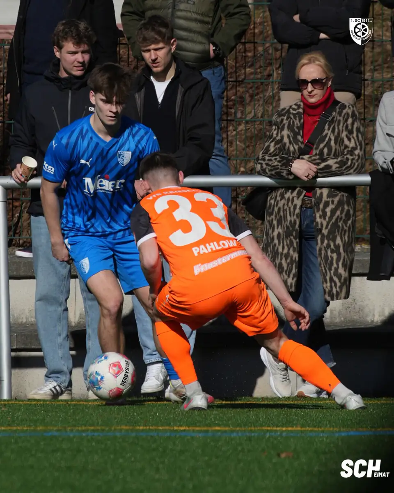
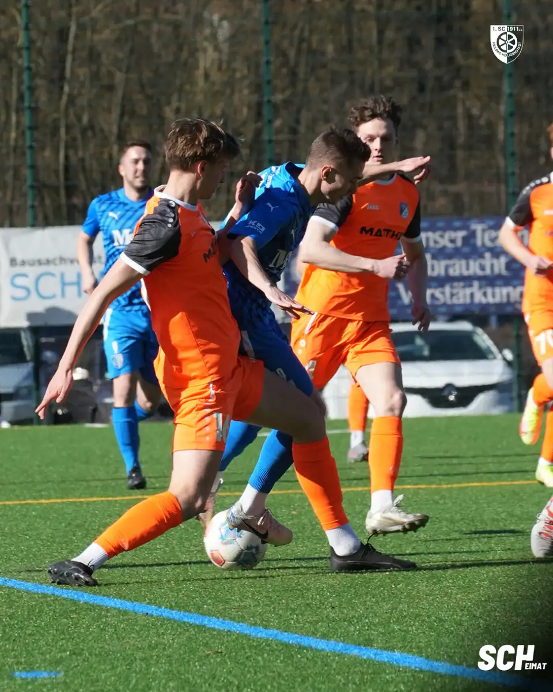
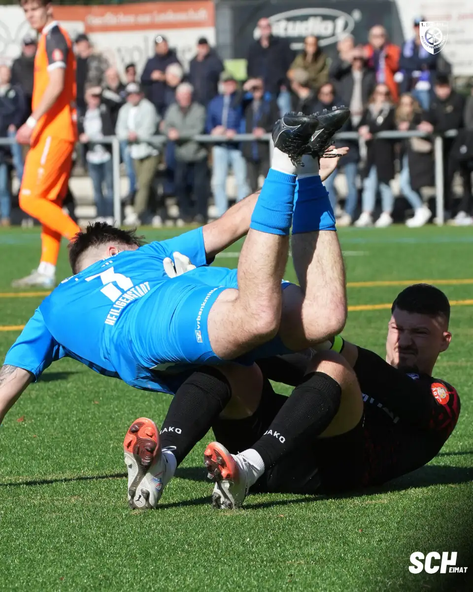
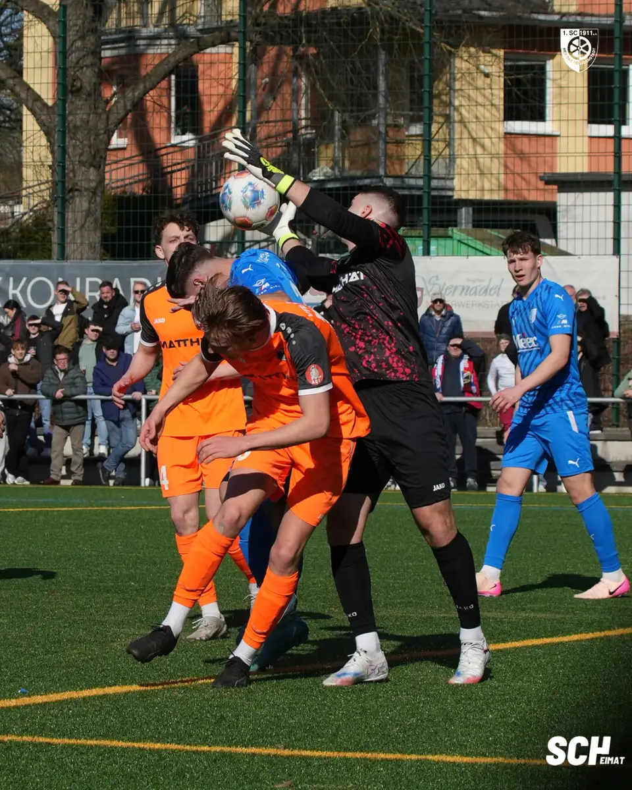
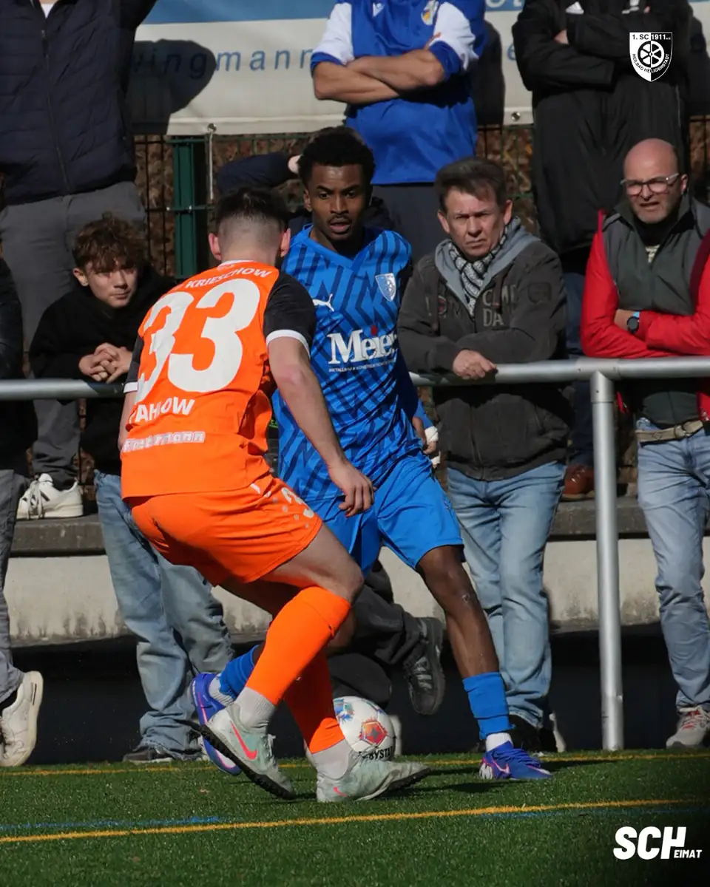
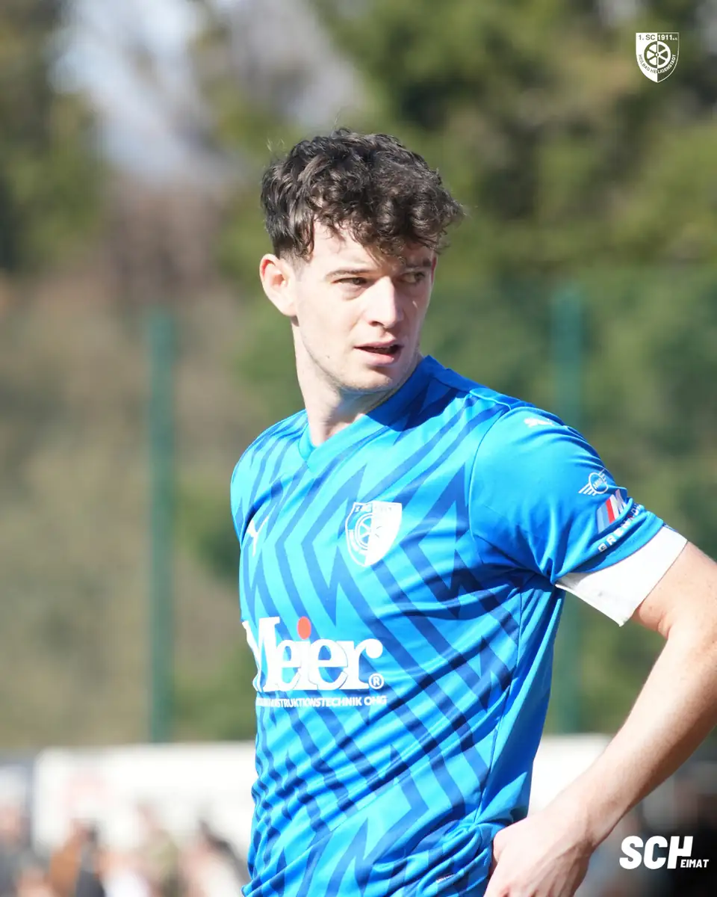
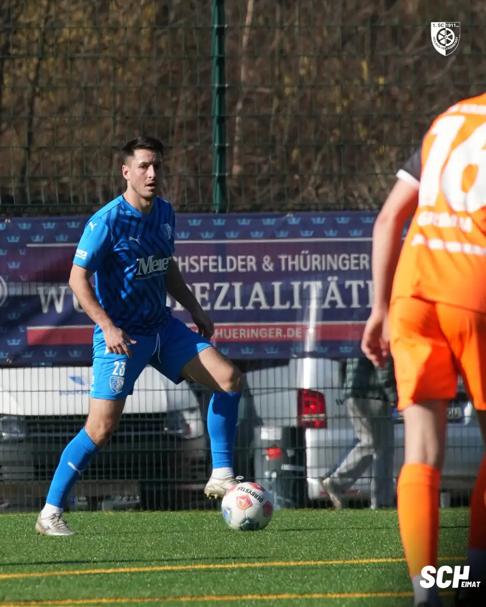
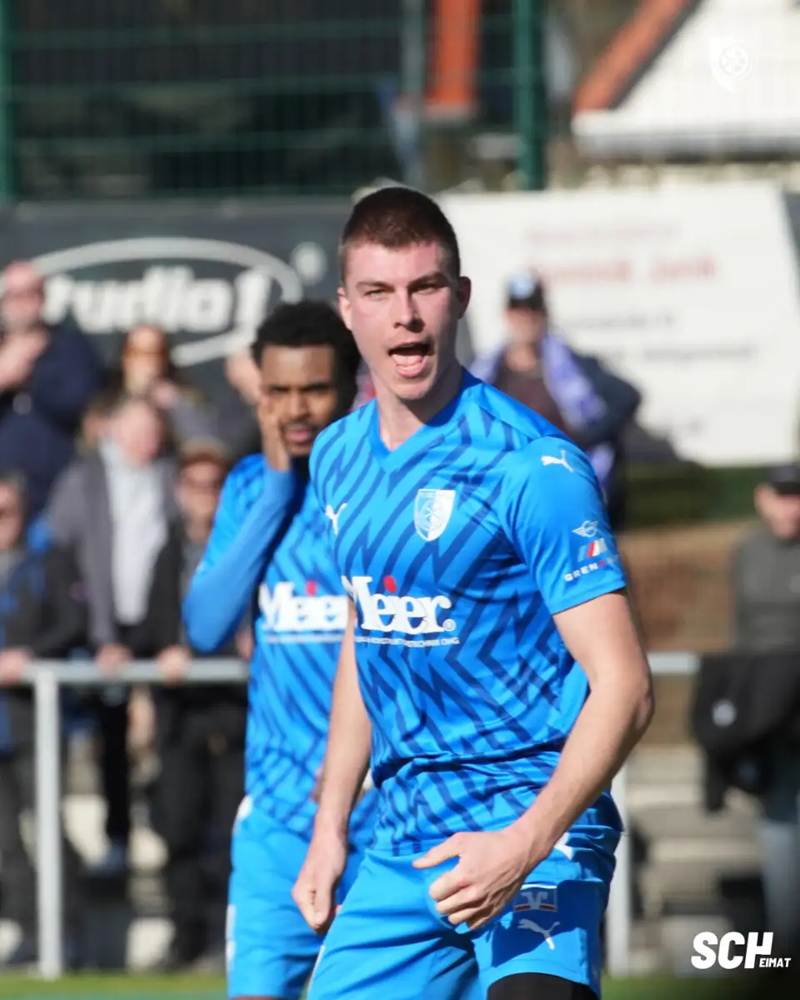
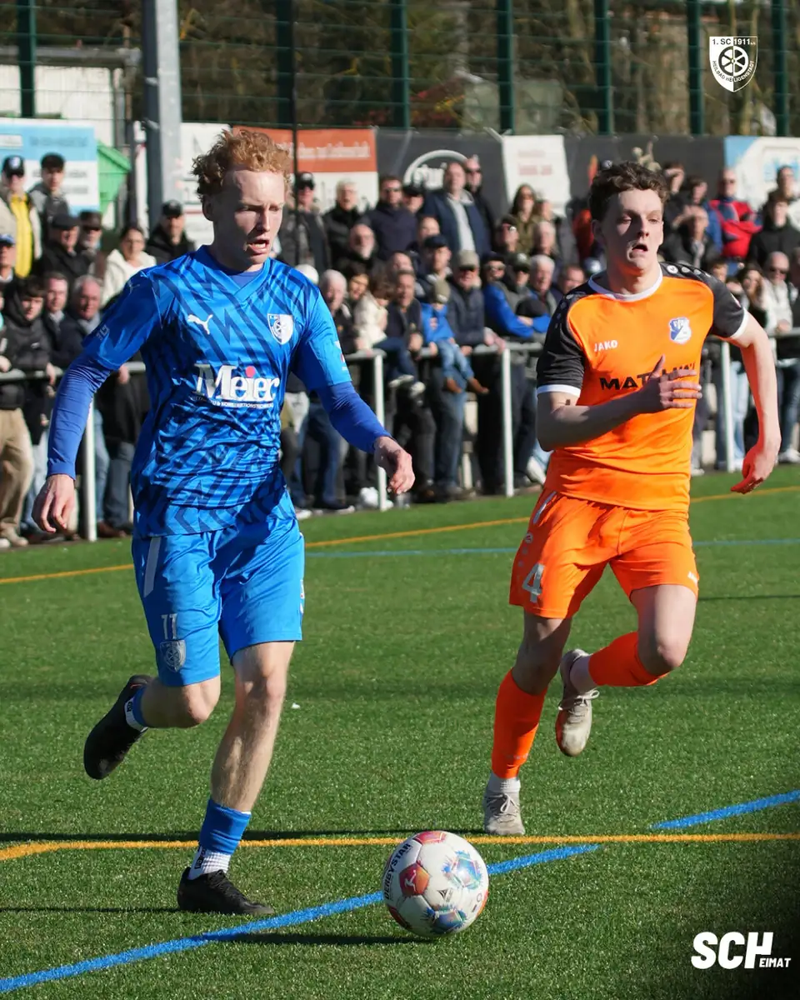
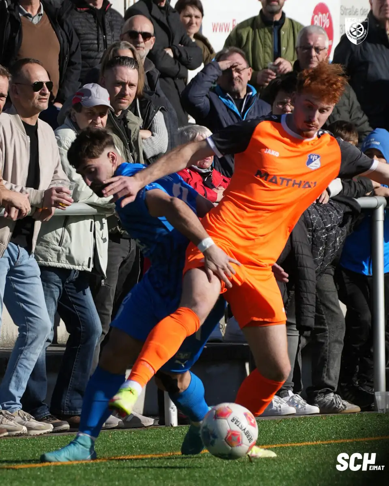
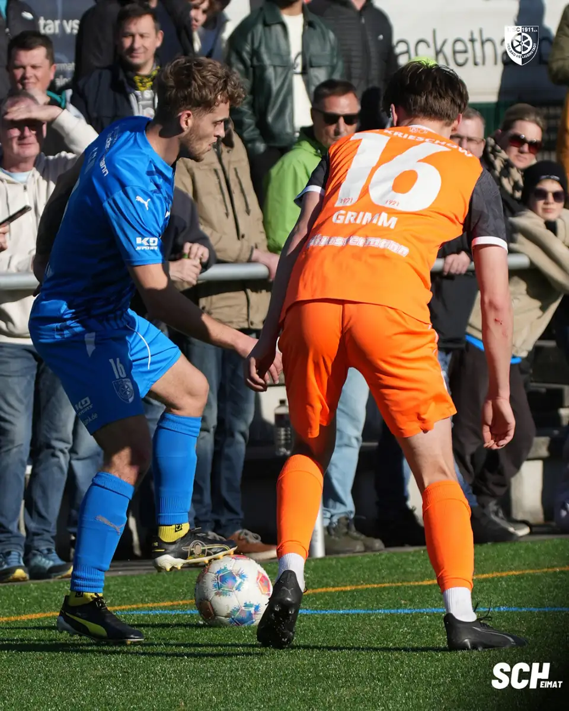
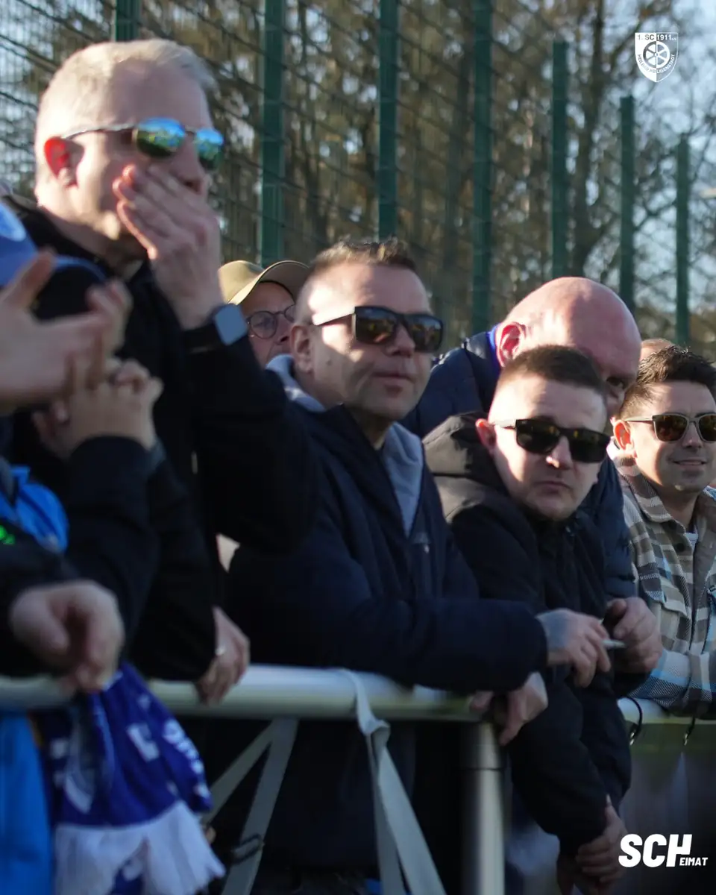